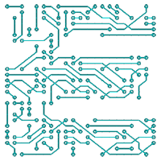
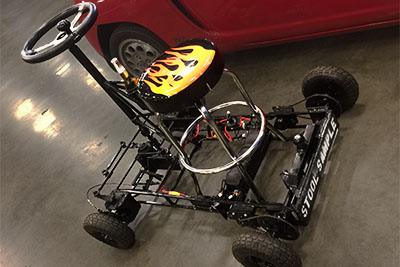
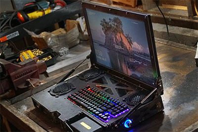
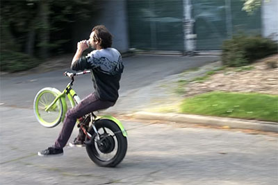
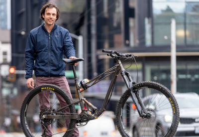
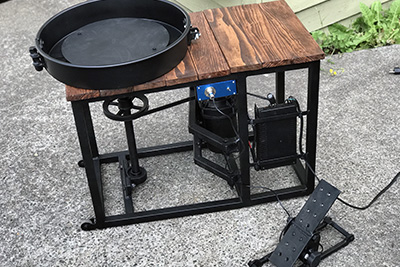
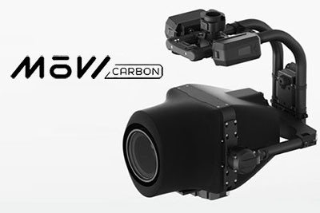
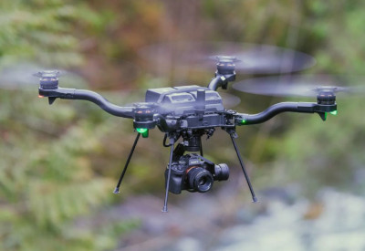
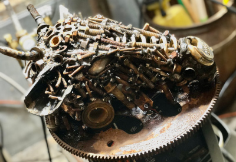
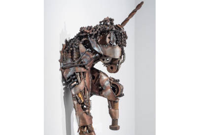

About me
About meHi! My name is Ethan Russell. I'm a software engineer specializing in robotics and firmware/embedded systems. I love learning new skills, so as a result, I try to work on stuff that involves a breadth of disciplines because limiting myself to one tiny aspect of a project can be boring.
When I'm not working on projects like the ones on this site, I like to climb rocks and generally play in the beautiful Cascades near my home in Seattle, WA.
About this website
I'm a big fan of making stuff. I love the process of coming up with an idea, and breaking it down into all the bits that make it into reality. Because I get so much intrinsic enjoyment from making things, most of the time I neglect the sharing-with-the-world aspect of building things, which I realize is a shame! I've decided to start making a conscious effort to log the projects through the years that I'm proud of - so here it is: one short paragraph and a thumbnail of a weird mix of steel artwork, embedded systems, software, and robots - in no meaningful order.
While unfinished, I want to turn this website into a sort of portfolio of professional and personal projects that I'm proud of. Mostly though, it's an excuse to play with making HTML5 canvas visualizions (it's an incredibly addicting time-suck).
The documentation of the projects on this site is not always the priority, so if you'd like to learn more about any of them, definitey email me!
I'm a big fan of making stuff. I love the process of coming up with an idea, and breaking it down into all the bits that make it into reality. Because I get so much intrinsic enjoyment from making things, most of the time I neglect the sharing-with-the-world aspect of building things, which I realize is a shame! I've decided to start making a conscious effort to log the projects through the years that I'm proud of - so here it is: one short paragraph and a thumbnail of a weird mix of steel artwork, embedded systems, software, and robots - in no meaningful order.
While unfinished, I want to turn this website into a sort of portfolio of professional and personal projects that I'm proud of. Mostly though, it's an excuse to play with making HTML5 canvas visualizions (it's an incredibly addicting time-suck).
The documentation of the projects on this site is not always the priority, so if you'd like to learn more about any of them, definitey email me!
I've fallen in love with fabricating stuff out of metal ever since I happened across a garage sale welder as a bright-eyed teenager. Many of my fabrication projects involve aspects of other disciplines - electronics, software, etc. - but I figured this category makes as much sense as any.
 Hammerkart2014
Hammerkart2014The Hammerkart is a 640lb, nearly 200hp go kart. The engine was liberated from a junkyard and once lived in a front-wheel drive Infiniti G20. This SR20 powered deathsled is unencumbered by bourgeois luxuries like suspension or floor panels, and never fails to make you grin ear to ear.
In 2018 I upgraded the electronic fuel injection with fully custom hardware and software adapted from the Megasquirt and Speeduino projects - it's based off of an STM32F4 processor and controls injectors, spark timing, idle, and listens to a variety of sensors to deliver the optimal performance at any RPM/load/temperature/elevation.
Stool Sample2018
The Stool Sample is my attempt at a futuristic electric vehicle, powered by two 6KW brushless motors and Freefly Arc200 motor drives. It features a vinyl bar stool and horizontal bus steering wheel - which makes for an overwhelming driving experience as butt-to-seat friction is minimized. The stool sample features a custom gyro-stabilized wheelie mode and has full control over differential steering using the steering wheel, and wheelie angle using the gas pedal. If you have a passenger, it also includes a trailer hitch for pulling around a second train car.
The Stool Sample is my attempt at a futuristic electric vehicle, powered by two 6KW brushless motors and Freefly Arc200 motor drives. It features a vinyl bar stool and horizontal bus steering wheel - which makes for an overwhelming driving experience as butt-to-seat friction is minimized. The stool sample features a custom gyro-stabilized wheelie mode and has full control over differential steering using the steering wheel, and wheelie angle using the gas pedal. If you have a passenger, it also includes a trailer hitch for pulling around a second train car.
{kind=link}
Steel "Laptop" Computer2021
When I realized my computer was starting to be a little outdated, slow, and couldn't hold a charge, I debated long and hard about whether to buy a new laptop or a desktop. Desktop computers are more easily upgradable and much more powerful for the cost but cannot be transported. This decision was too hard so I tried to find a solution with no compromises - introduce my "TOP-LAP". This computer is made from laser cut steel with a full embedded 24" fold-up monitor. It uses a Freefly SL-8 drone battery for power, and a custom CAN communication board that gives the computer SOC/voltage/current telemetry and charger + battery control. It has gas struts to open the screen, a full car stereo system for audio. In addition to looking badass, the computer specs are badass to match. It uses a top-of-the-line AMD Ryzen processor, 32GB of RAM, and 2TB of fast onboard solid state drives. Best of all, it's still entirely portable and can run on battery power for 4+ hours.
When I realized my computer was starting to be a little outdated, slow, and couldn't hold a charge, I debated long and hard about whether to buy a new laptop or a desktop. Desktop computers are more easily upgradable and much more powerful for the cost but cannot be transported. This decision was too hard so I tried to find a solution with no compromises - introduce my "TOP-LAP". This computer is made from laser cut steel with a full embedded 24" fold-up monitor. It uses a Freefly SL-8 drone battery for power, and a custom CAN communication board that gives the computer SOC/voltage/current telemetry and charger + battery control. It has gas struts to open the screen, a full car stereo system for audio. In addition to looking badass, the computer specs are badass to match. It uses a top-of-the-line AMD Ryzen processor, 32GB of RAM, and 2TB of fast onboard solid state drives. Best of all, it's still entirely portable and can run on battery power for 4+ hours.
Wheelie Bike2023
I've built many motorized bikes back in my day, but this is the one that's my daily driver around town. There is no better feeling than passing cars doing a computer controlled wheelie on childrens bicycle up the Seattle Madison Park hill to get groceries every week. It started its life as a Magna Carolina Cruisin bicycle, and I welded on brackets to support a 1kW hub motor (overclocked to nearly 8kW peak). I added a fully custom motor drive (recently upgraded from the Freefly Arc200 for more powah!) with a built in gyro and accelerometer for stabilized wheelies. It has a custom 75V battery pack made with 36 21700 batteries and a custom OLED dashboard on the handlebars that took about 10x more engineering time than the whole rest of the bike.
I've built many motorized bikes back in my day, but this is the one that's my daily driver around town. There is no better feeling than passing cars doing a computer controlled wheelie on childrens bicycle up the Seattle Madison Park hill to get groceries every week. It started its life as a Magna Carolina Cruisin bicycle, and I welded on brackets to support a 1kW hub motor (overclocked to nearly 8kW peak). I added a fully custom motor drive (recently upgraded from the Freefly Arc200 for more powah!) with a built in gyro and accelerometer for stabilized wheelies. It has a custom 75V battery pack made with 36 21700 batteries and a custom OLED dashboard on the handlebars that took about 10x more engineering time than the whole rest of the bike.
DIY Mountain Bike2025
I've been interested in getting into mountain biking for years, but with a price tag worth over all of my cars combined, my only option was to make one for myself. As someone who never mountain-biked at the beginning of the project, I totally lucked out on the geometry I pulled out of my ass. It has 190mm of rear travel, and isn't the lightest thing, but it flies on the uphill as well as the downhill. This build was the most cowboy version of a moutain bike build as could be (no frame jigs, made almost entirely with rusty scrap metal), but it's super capable and I love it.
I've been interested in getting into mountain biking for years, but with a price tag worth over all of my cars combined, my only option was to make one for myself. As someone who never mountain-biked at the beginning of the project, I totally lucked out on the geometry I pulled out of my ass. It has 190mm of rear travel, and isn't the lightest thing, but it flies on the uphill as well as the downhill. This build was the most cowboy version of a moutain bike build as could be (no frame jigs, made almost entirely with rusty scrap metal), but it's super capable and I love it.
Couch Trailer2017
I've had a history of working on an expanding fleet of motorized furniture. When my neighbor asked if I wanted to get rid of his couch, I was feeling nostalgic. I said yes; I added wheels, a trailer tongue, an e-brake for sick skids, and nearly got arrested for taking it for a spin around Green Lake.
I've had a history of working on an expanding fleet of motorized furniture. When my neighbor asked if I wanted to get rid of his couch, I was feeling nostalgic. I said yes; I added wheels, a trailer tongue, an e-brake for sick skids, and nearly got arrested for taking it for a spin around Green Lake.
 Sketchy-ass camera car2017
Sketchy-ass camera car2017When working at Freefly Systems, I got inspired by incredible footage and never-before-seen camera motion by Freefly customers from purpose-built camera cars. Sadly, to purchase these camera cars requires nearly four orders of magnitude bigger budget than I had, so I turned my Subaru into a camera car instead!
I've developed accessories for it as well - like a vibration-isolating arm that sticks on the end of the crane or into the front/rear trailer hitches.
Footage I shot with Mumukuba Productions from this crane was internet famous for a bit!
 CNC Plasma Cutter2016
CNC Plasma Cutter2016This custom CNC plasma cutter uses an Everlast torch and is powered by LinuxCNC.
Pottery Wheel2020
At the beginning of the COVID-19 lockdown, I decided I wanted to get into pottery. First step: make a pottery wheel. This pottery wheel is made from an electric bike motor and scrap steel from my garage. I decided to make life hard on myself by making it all from scratch - including motor control electronics and software. The foot pedal was especially fun to make - the structure is steel but all internals are 3D printed mechanisms.
At the beginning of the COVID-19 lockdown, I decided I wanted to get into pottery. First step: make a pottery wheel. This pottery wheel is made from an electric bike motor and scrap steel from my garage. I decided to make life hard on myself by making it all from scratch - including motor control electronics and software. The foot pedal was especially fun to make - the structure is steel but all internals are 3D printed mechanisms.
 Theo Jansen Walking Machine2013
Theo Jansen Walking Machine2013This 12-legged walking machine was built after my senior year in high school and is powered by a 6hp cement mixer engine.
 Drop Trailer2016
Drop Trailer2016Tilt trailers are a)difficult to load awkward loads, b)absurdly heavy, and c)absurdly expensive. This was designed and built out of necessity to carry heavy awkward loads out of my house. It uses bottle jacks to fully drop the trailer to the ground, and a winch to pull loads onto the bed.
 Tesla Egg2016
Tesla Egg2016The Tesla egg was one of Nikola Tesla's original demonstrations of A/C electricity. This was built as a display for the UPS science building. The solid aluminum egg spins on end when electric currents are induced throughout it.
 Twist-O-Crunch2011
Twist-O-Crunch2011Way back in the day, in my sophomore year in high school, a friend and I raised money on Kickstarter to build this 120lb battlebot for the 2011 Robogames.
 Field-Oriented Brushless Servo Controllers
Field-Oriented Brushless Servo ControllersStarted as a computer science capstone project for my senior year at UPS, this controller drives off-the-shelf sensored hobby brushless motors as industrial servos to regulate torque, RPM, and position with stepper motor style input. Since my capstone project, I've built many motor drives for both work and personal projects.
 Card Spoofer
Card SpooferOne of my early embedded projects: the Cardspoofer. Students around UPS want to let fellow students into their dorm building for group projects or to hang out in a lounge. Currently, a student has to physically give a peer their student ID card to let anyone in. Now, you can feel like you're in Mission-Impossible and use the cardspoofer to emulate the electromagnetic strip by only entering their student ID number.
 Intervalometer
IntervalometerOne of my earliest embedded systems projects: powered by an Atmel AVR, this camera controller is designed to trigger Canon DSLRs through a 2.5mm stereo cable, or Nikon DSLRs with an infrared remote. It is perfect for long-exposure or time-lapse photography.
MoVI Carbon from Freefy Systems
For five years, I spent my working life as a robotics engineer with a small team in Woodinville, WA who have been creating innovative products in the world of cinematic camera movement. I've gotten to work on too many projects to list on this page, but this was the most cool gimbal I've worked on.
In addition, though, there were several others I've spent an equally enormous amount of my life helping to bring to life: I've been very heavily involved in the design, and software + electrical implementation of several gimbals: Movi Cinema Robot, a mobile film-making robot, Mōvi Pro, a high-end prosumer gimbal, and MōVI Carbon, the world's smallest cinema grade five-axis gimbal.
For five years, I spent my working life as a robotics engineer with a small team in Woodinville, WA who have been creating innovative products in the world of cinematic camera movement. I've gotten to work on too many projects to list on this page, but this was the most cool gimbal I've worked on.
In addition, though, there were several others I've spent an equally enormous amount of my life helping to bring to life: I've been very heavily involved in the design, and software + electrical implementation of several gimbals: Movi Cinema Robot, a mobile film-making robot, Mōvi Pro, a high-end prosumer gimbal, and MōVI Carbon, the world's smallest cinema grade five-axis gimbal.
Freefly Astro
Astro is an incredibly ambitious project for a small team, is a drone - with associated gimbal, smart battery, and complete software package with fleet management/mapping/surveying - and was been my baby for several years.
Astro is an incredibly ambitious project for a small team, is a drone - with associated gimbal, smart battery, and complete software package with fleet management/mapping/surveying - and was been my baby for several years.
 Nitrogen Generator
Nitrogen GeneratorBuilt and programmed for the UPS chem department to replace continuous replacement of nitrogen dewars to drive analytical equipment. This system uses computer controlled pressure-swing-absorption to filter the oxygen from compressed air and is currently delivering 24/7 nitrogen to multiple labs around campus.
 String Winder
String WinderBuilt for a UPS physics faculty member for research on non-uniform guitar strings. This computer-controlled guitar string lathe winds guitar strings with a user-specified mass density. It can also calculate the pitch of the wound guitar string with a record player needle, and accurately measures the real mass-density.
My art started off as a necessity when I felt the need to go weld without a project underway, and continued as a big passion of mine.
 Fish2015
Fish2015I have a series of steel scrap sculptures built over the course of the last few years. This one is one of my favorites, and currently lives in a padio in Massachusetts.
 Dino2016
Dino2016The dino was built to clear out my ever increasing scrap pile in my garage. If you live in Tacoma, maybe you've seen it shoot fire at pedestrians from its onboard propane tank.
Cow2019
When I took art in college, I had to always give a few words about a piece during our critique sessions. The best I could do was "I made a cow."
When I took art in college, I had to always give a few words about a piece during our critique sessions. The best I could do was "I made a cow."
Unicorn2017
This one was a little unfinished in my eyes. I always wanted to expand a few pieces and then embed it in epoxy resin. Despite this, my Mom loves it.
This one was a little unfinished in my eyes. I always wanted to expand a few pieces and then embed it in epoxy resin. Despite this, my Mom loves it.